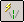
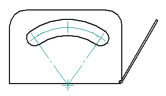
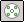
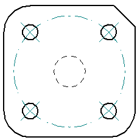

Centerlines, center marks, and bolt hole circles
You can add centerline, center mark, and bolt hole circle annotations to holes, slots, and other features on a drawing or to a model as PMI. You also can add dimensions that reference these annotations.
The Angle Between command adds dimensions that reference centerline, center mark, and bolt hole circle annotations.

Centerlines, center marks, and bolt hole circles in part views are associative to the elements they are added to on the 2D Model sheet, working sheet, drawing view, or model. If the model or the drawing view is modified, the annotations update their position and size accordingly.
Adding centerlines, center marks, and bolt hole circles
On a drawing or sketch, the commands to add these annotations are located on the Home tab→Annotation group. In a 3D model, the commands are available on the PMI tab.
- Automatic Centerlines command

-
In part views, you can use the Automatic Centerlines command to retrieve centerlines and center marks from the model and automatically add them to model geometry on the drawing. Based on your selections on the Automatic Centerlines command bar, this command automatically adds or removes all model-derived centerlines and center marks in the selected part view.
You can specify the eligible-geometry parameters for creating the annotations using the Center Line and Center Mark Options dialog box, which you can open from the command bar. You also can use this dialog box to specify one or more centerline and center mark options for slot features.
Example:In this slot feature, the centerline, center marks on end points and strike points, and center of arc projection lines were retrieved from the model:

- Centerline command

-
The Centerline command manually adds a centerline annotation to selected elements in a 2D view and to model geometry in a part view. Options on the Centerline command bar specify the centerline type (straight or curved) and how you want to define it (using two points, two lines, two arcs, or a center point).
Example:Linear and arc centerline types placed on 2D geometry:

- Center Mark command

-
The Center Mark command manually adds a center mark annotation to selected curved elements, such as circles, arcs, ellipses, or partial ellipses in a 2D view or a part view. You can use the Center Mark command bar to choose the creation method, attach the center mark to a keypoint, and add projection lines.
Example:Center marks placed at keypoints:

- Bolt Hole Circle command

-
The Bolt Hole Circle command creates a bolt hole circle with center marks.
Example:
The Bolt Hole Circle command bar specifies how you want to define it (using two points, or three points, or using center point and radius). It also contains options to trim away portions of the circle segment, and to add or remove unneeded elements from the bolt hole circle.
The Bolt Hole Circle Properties dialog box specifies the type of elements (circle, arc, hidden lines) on which the center marks are placed.
Modifying centerlines, center marks, and bolt hole circles
You can change the appearance of an existing center mark, line, or bolt hole circle by changing its properties. You can edit properties using the Properties command on the shortcut menu, or by selecting the Properties button on the command bar.
For PMI added to a model, the font size is controlled by the Model Size PMI and Pixel Size PMI options on the PMI tab on the ribbon.
Any of these annotations can be removed individually using the Delete command on the annotation shortcut menu.
Additionally, centerlines and center marks that were added automatically to a draft
document with the Automatic Centerlines command can be removed as a group from a drawing view by setting the Remove Lines and Marks button  on the Automatic Centerlines command bar.
on the Automatic Centerlines command bar.
Reattaching detached annotations
In a draft document, when centerlines, center marks, and bolt hole circles become detached due to changes in the model, they are displayed using the Error Dimension color set on the General page (Dimension Style dialog box). They also are identified in the Dimension Tracker dialog box.
You can reattach the annotations using the attachment handles that are visible when you select them. When reattached, they display using the Driven Dimension color.
How do I
Automatically create centerlines and center marks in a drawing viewAutomatically remove centerlines and center marks from a drawing view
Place a center mark
Place a centerline midway between two lines
Place a centerline on a slot
Place a center axis on a cylinder or hole feature
Example: Dimension a curved slot
Place a bolt hole circle
Look up more details
Automatic Centerlines commandAutomatic Centerlines command bar
Centerline and Center Mark Options dialog box
Center Mark command
Center Mark command bar
Centerline command
Centerline command bar
Center Line and Center Mark Properties dialog box
Bolt Hole Circle command
Bolt Hole Circle command bar
Bolt Hole Circle Properties dialog box